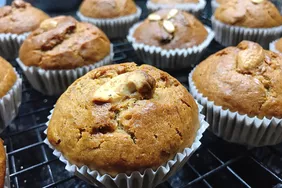

Vegan Banana Muffins

Description
These vegan banana muffins are moist and yummy. You can't tell at all that these muffins don't have any dairy or eggs.
Steps
- Preheat the oven to 350 degrees F (175 degrees C). Grease 12 muffin cups or line with paper liners.
- Mix flour, white sugar, brown sugar, cinnamon, baking powder, baking soda, nutmeg, and salt together in a large bowl. Stir bananas, canola oil, and coconut milk together in a separate bowl; stir banana mixture into flour mixture until just combined. Divide batter among the muffin cups, filling each about 3/4 full.
- Bake in the preheated oven until a toothpick inserted into the center of a muffin comes out clean, 30 to 35 minutes.